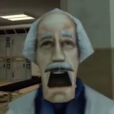

Gyerekkorom óta érdekelt a fotózás és a videókészítés. A leggagyibb készülékkel is próbáltam minél szebb és érdekesebb fotókat, videókat készíteni. Az első komolyabb gépemet a középiskolai éveim során tudtam beszerezni. Az egy Leica XPM2000LUL készülék volt. Ezzel a géppel sikerült több első helyezést is elérni különböző fotós versenyeken. Később saját kiállításom is volt Budapesten, amely nagyszerűen zajlott. Sok érdeklődő volt és ezután kezdtem el a vállalkozásomat építeni. Jelenleg természetfotózással, esküvői fotózással, reklám fotózással és videók készítésével foglalkozom.
Jelenleg rengeteg ügyfelem van, de próbálok mindenkire időt szánni, hisz imádom a hobbim és nekik meg szükségük van egy profi fotósra ;).
